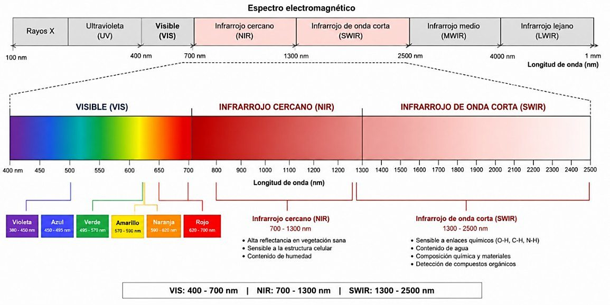
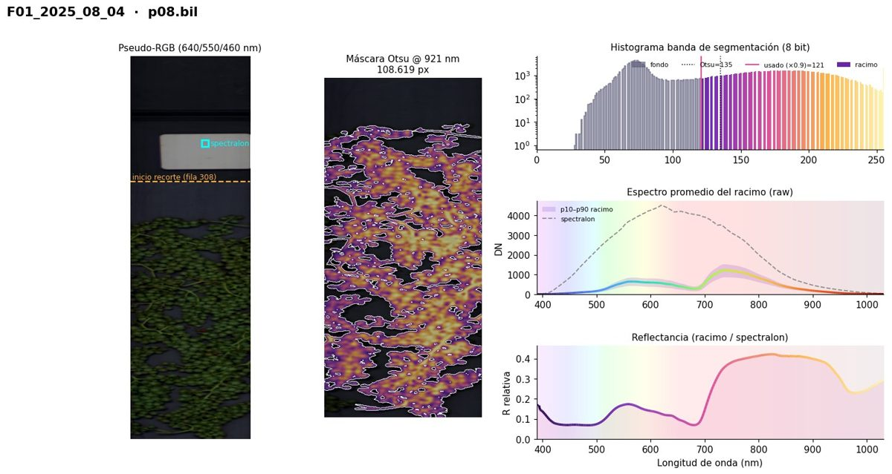
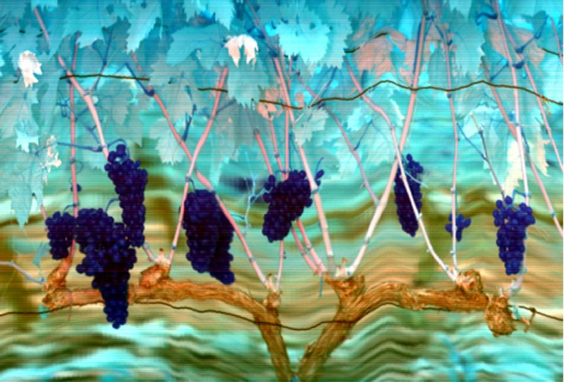
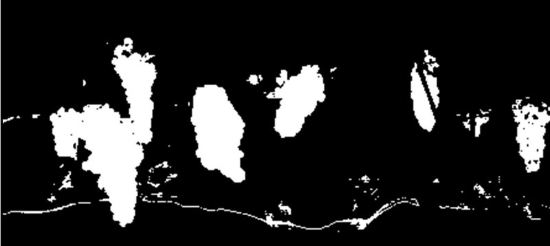
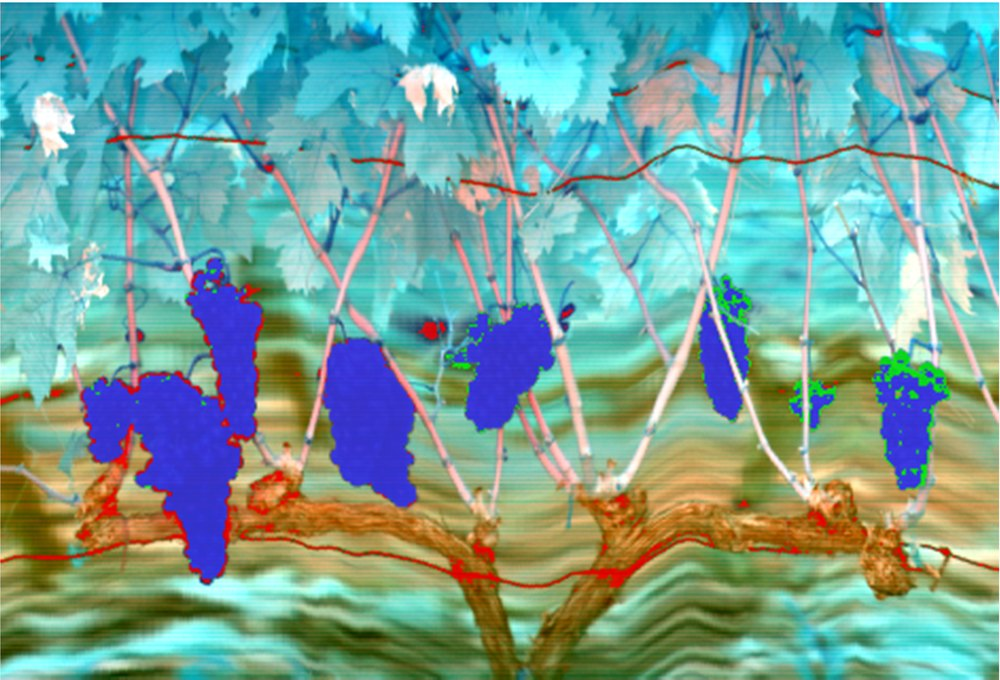
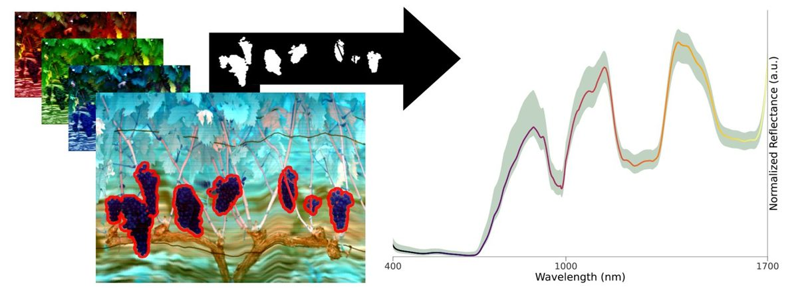
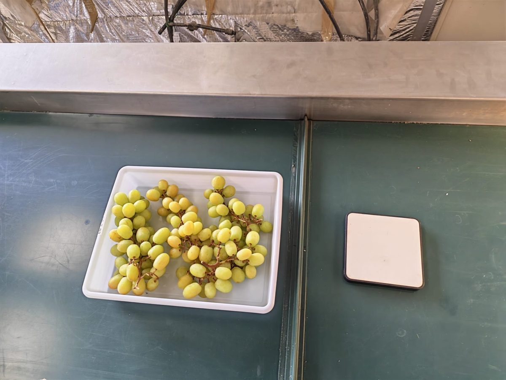
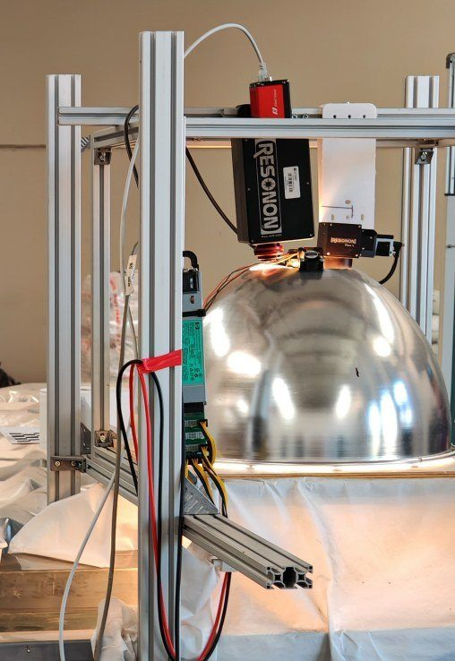

Colores que no vemos
La luz que no percibimos esconde información sobre la uva antes de probarla.
El problema
Antes de vendimiar, bodegas y técnicos necesitan saber cómo va la maduración: azúcar, color… Normalmente se toman muestras y se analizan en laboratorio.
Lo que dice la investigación
Una cámara hiperespectral (400–1000 nm) montada en un vehículo a 5 km/h midió, en el propio viñedo, los sólidos solubles totales (R² de 0,92 en predicción) y los antocianos, los pigmentos del color (R² de 0,83), de uvas Tempranillo. Con ellos se elaboraron mapas de cómo cambia la maduración (Gutiérrez et al., 2019).
El proyecto HyperGrape
La imagen hiperespectral combina fotografía y espectroscopía: en lugar de tres colores (rojo, verde y azul), registra cientos de bandas de luz, incluidas algunas que el ojo no ve, y cada punto de la imagen tiene así su propia «huella» espectral (Tardaguila et al., 2021; Ferro y Catania, 2023).


HyperGrape es un proyecto del grupo de investigación Televitis, de la Universidad de La Rioja y el Instituto de Ciencias de la Vid y del Vino (ICVV), con María Paz Diago como investigadora principal. Está financiado por el Ministerio de Ciencia, Innovación y Universidades (AEI) y los fondos FEDER de la Unión Europea. Su objetivo es desarrollar tecnologías no invasivas (imagen hiperespectral, multiespectral y RGB) para monitorizar en tiempo real la composición de la uva, tanto en campo como a la entrada de bodega (HyperGrape, 2025).
En el viñedo, las cámaras viajan montadas en un vehículo todoterreno que recorre las filas. Trabajan en el visible y el infrarrojo cercano (300–1400 nm) y en el infrarrojo de onda corta (de 1400 nm en adelante), luz que permite ver características de plantas y racimos invisibles para el ojo humano (HyperGrape, 2025).
Así «ve» una cámara hiperespectral
Esta imagen no es una fotografía normal: es una vista del infrarrojo de onda corta (900–1700 nm) representada en falso color, y por eso los colores no son los reales. En ella se puede marcar qué píxeles corresponden a racimos y separarlos del resto.



Al marcar los racimos se puede calcular el espectro solo de las uvas, y relacionarlo con su composición (Tejada-González et al., 2026).



La misma idea se lleva a la entrada de bodega, donde las cámaras miran los racimos que llegan (HyperGrape, 2025). El trabajo se centra en Tempranillo (Tejada-González et al., 2026).
Ya hay resultados publicados: en Tempranillo tinto, los modelos estimaron azúcares, pH, acidez total y ácido málico con R² de predicción de entre 0,93 y 0,98, y los parámetros de color, con valores de entre 0,81 y 0,89 (Tejada-González et al., 2026).
Así será el juego
Verás cómo se ve el viñedo con «ojos» que captan más colores que los nuestros.
Para saber más
- Gutiérrez, S., Tardaguila, J., Fernández-Novales, J. y Diago, M. P. (2019). On-the-go hyperspectral imaging for the in-field estimation of grape berry soluble solids and anthocyanin concentration. Australian Journal of Grape and Wine Research, 25, 127–133. doi:10.1111/ajgw.12376
- Tejada-González, A., Barrio, I., Poggi, L., Fernández-Novales, J., Martínez-Lapuente, L., Guadalupe, Z. y Diago, M. P. (2026). On-the-go hyperspectral imaging for monitoring grape maturity in Tempranillo: supporting adaptive harvest decisions. OENO One, 60(3), 9877. doi:10.20870/oeno-one.2026.60.3.9877
- HyperGrape (2025). HyperGrape: desarrollando la aplicación de tecnologías no invasivas para monitorizar en tiempo real y a la entrada de bodega la composición de la uva (PID2023-150555OB-I00). Universidad de La Rioja (grupo Televitis, ICVV); financiado por MICIU/AEI/10.13039/501100011033 y FEDER, UE. hypergrape.unirioja.es